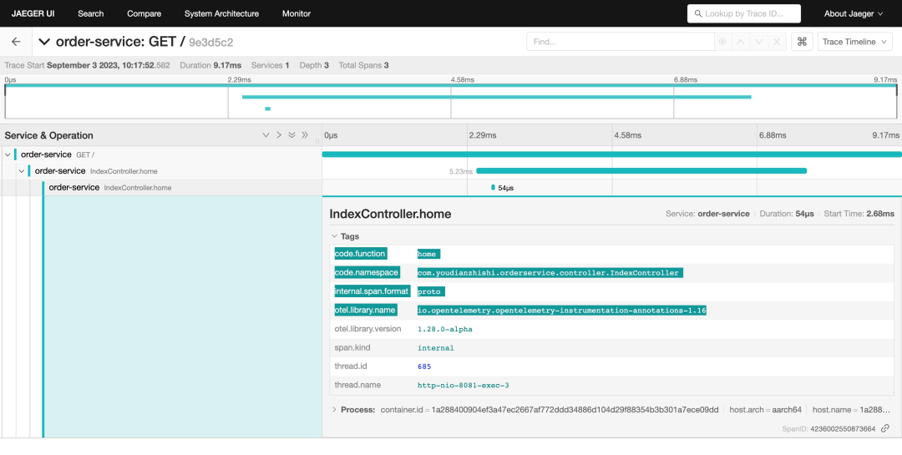
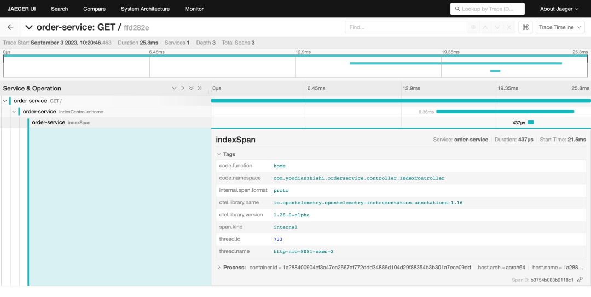
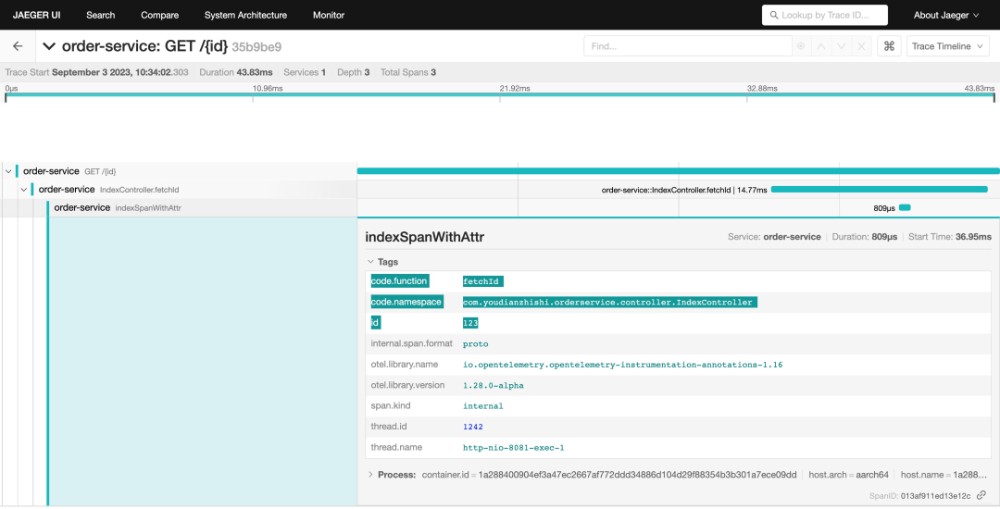
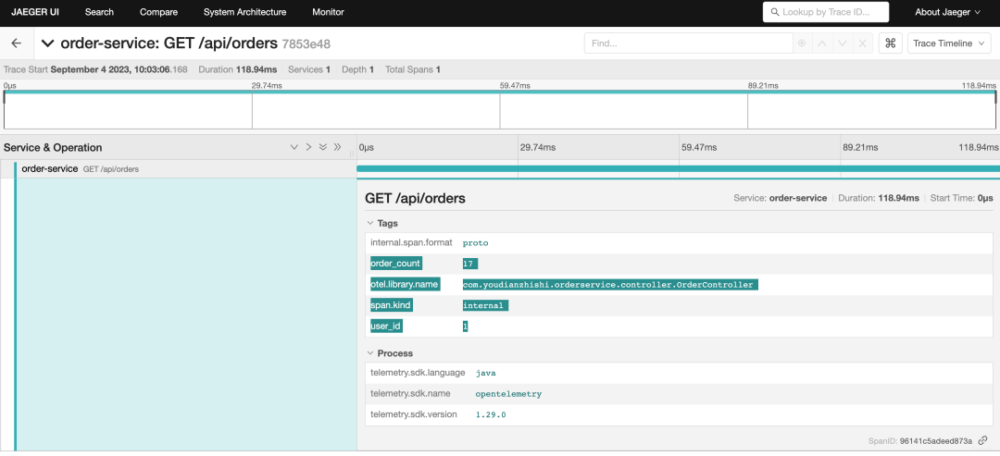
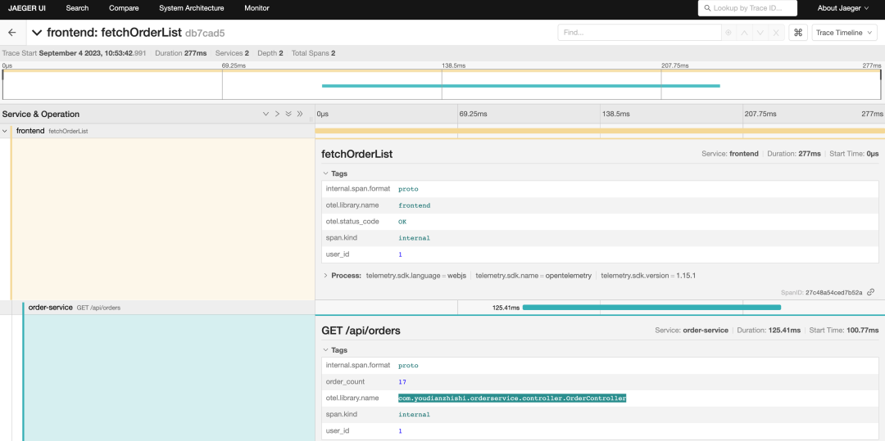
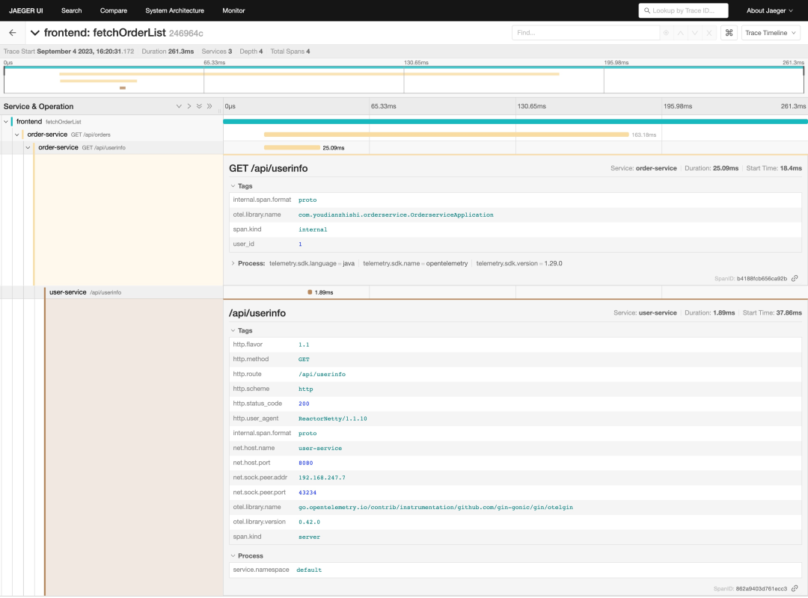
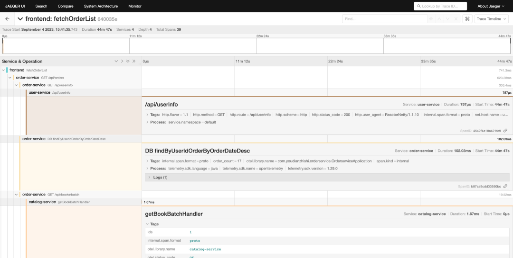

8 Java 应用通过 OpenTelemetry API 实现手动埋点
Java 应用可以通过 OpenTelemetry 提供的 Java agent 来实现自动埋点功能，在大多数场景下也完全足够了，但是有时候我们需要更加精细的控制，这时候我们就需要使用手动埋点的方式来实现了。
使用注解埋点
我们可以在 Java 应用通过手动埋点的方式来实现链路追踪，但如果我们不希望进行太多的代码更改，那么可以使用注解的方式来实现，OpenTelemetry 提供了一些注解来帮助我们实现手动埋点，比如 @WithSpan、@SpanAttribute。
首先我们需要添加依赖库 opentelemetry-instrumentation-annotations。
<dependencies>
<dependency>
<groupId>io.opentelemetry.instrumentation</groupId>
<artifactId>opentelemetry-instrumentation-annotations</artifactId>
<version>1.29.0</version>
</dependency>
</dependencies>
开发人员可以使用 @WithSpan 注解来向 OpenTelemetry 自动检测发送信号，每当标记的方法被执行时都应创建一个新的 span。
比如我们在 Order Service 中的 IndexController 中添加一个 @WithSpan注解，代码如下所示：
// src/main/java/com/youdianzhishi/orderservice/controller/IndexController.java
package com.youdianzhishi.orderservice.controller;
// ......
import io.opentelemetry.instrumentation.annotations.WithSpan;
@RestController
@RequestMapping("/")
public class IndexController {
@GetMapping
@WithSpan
public ResponseEntity<String> home(HttpServletRequest request) {
return new ResponseEntity<>("Hello OpenTelemetry!", HttpStatus.OK);
}
}
然后我们重建镜像，重新启动容器，当我们访问首页的时候就可以看到 Jaeger UI 中多了一个 IndexController.home 的 span 了。

每次应用程序调用有注解的方法时，它都会创建一个表示其持续时间并提供任何抛出异常的 span。默认情况下，span 名称是 <className>.<methodName>，当然也可以在注解中提供了一个名称作为参数，比如可以使用 @WithSpan("indexSpan")来指定 span 的名称，这样在 Jaeger UI 中就可以看到 indexSpan 的 span 了。

此外当为一个带注解的方法创建一个 span 时，可以通过使用 @SpanAttribute 注解来自动将方法调用的参数值添加为创建 span 的属性。
比如我们在 IndexController 中添加一个 fetchId 函数，并接收一个 id 参数，我们就可以使用 @SpanAttribute 注解来将接收的 id参数添加为 indexSpanWithAttr 这个 span 的属性，代码如下所示：
// src/main/java/com/youdianzhishi/orderservice/controller/IndexController.java
package com.youdianzhishi.orderservice.controller;
// ......
import io.opentelemetry.instrumentation.annotations.WithSpan;
import io.opentelemetry.instrumentation.annotations.SpanAttribute;
@RestController
@RequestMapping("/")
public class IndexController {
@GetMapping
@WithSpan("indexSpan")
public ResponseEntity<String> home(HttpServletRequest request) {
return new ResponseEntity<>("Hello OpenTelemetry!", HttpStatus.OK);
}
@GetMapping("/{id}")
@WithSpan("indexSpanWithAttr")
public ResponseEntity<String> fetchId(@SpanAttribute("id") @PathVariable Long id) {
return new ResponseEntity<>("Hello OpenTelemetry：" + id, HttpStatus.OK);
}
}
然后我们重建镜像，重新启动容器，当我们访问 http://localhost:8081/123 的时候就可以看到 Jaeger UI 中多了一个 indexSpanWithAttr 的 span 了，并且该 span 的属性中包含了我们传递的 id 参数。

使用 API 手动埋点
除了使用注解的方式来实现埋点之外，我们还可以使用 OpenTelemetry 提供的 API 来实现手动埋点，这样我们就可以更加精细的控制我们的 span 了，当然这样也会增加我们的代码量，但就不需要使用 java agent 了。
在 Java 应用中，要实现手动埋点，
- 首先第一步是获取
OpenTelemetry接口的实例，我们需要尽早在应用程序中配置一个OpenTelemetrySdk的实例，我们可以使用OpenTelemetrySdk.builder()方法来完成这个操作。 - 然后可以通过返回的
OpenTelemetrySdkBuilder实例获取与信号、跟踪和指标相关的提供程序，以构建OpenTelemetry实例。 - 我们可以使用
SdkTracerProvider.builder()和SdkMeterProvider.builder()方法来构建 Provider。 - 此外还强烈建议将 Resource 实例定义为生成遥测数据的实体的表示；特别是 service.name 属性是最重要的遥测源标识信息的一部分。
<!-- pom.xml -->
<project>
<dependencyManagement>
<dependencies>
<dependency>
<groupId>io.opentelemetry</groupId>
<artifactId>opentelemetry-bom</artifactId>
<version>1.29.0</version>
<type>pom</type>
<scope>import</scope>
</dependency>
</dependencies>
</dependencyManagement>
<dependencies>
<dependency>
<groupId>io.opentelemetry</groupId>
<artifactId>opentelemetry-api</artifactId>
</dependency>
<dependency>
<groupId>io.opentelemetry</groupId>
<artifactId>opentelemetry-sdk</artifactId>
</dependency>
<dependency>
<groupId>io.opentelemetry</groupId>
<artifactId>opentelemetry-exporter-otlp</artifactId>
</dependency>
<dependency>
<groupId>io.opentelemetry</groupId>
<artifactId>opentelemetry-semconv</artifactId>
<version>1.29.0-alpha</version>
</dependency>
</dependencies>
</project>
在 pom.xml文件中添加了 opentelemetry-api、opentelemetry-sdk、opentelemetry-exporter-otlp、opentelemetry-semconv这几个依赖库，其中 opentelemetry-semconv 是用来定义一些常用的属性的，比如 service.name、http.method、http.status_code 等，当然现在我们就不需要 opentelemetry-instrumentation-annotations 这个依赖库了。
在 Spring Boot 项目中，初始化 OpenTelemetry 的一种常见方法是使用 @Configuration 类。
这样的类会在 Spring Boot 应用启动时自动运行，使得初始化工作更加集中和组织化。
我们这里创建一个如下所示的 OpenTelemetryConfig 类，代码如下所示：
// src/main/java/com/youdianzhishi/orderservice/config/OpenTelemetryConfig.java
package com.youdianzhishi.orderservice.config;
import io.opentelemetry.api.OpenTelemetry;
import io.opentelemetry.api.common.Attributes;
import io.opentelemetry.exporter.otlp.trace.OtlpGrpcSpanExporter;
import io.opentelemetry.sdk.OpenTelemetrySdk;
import io.opentelemetry.sdk.resources.Resource;
import io.opentelemetry.sdk.trace.SdkTracerProvider;
import io.opentelemetry.sdk.trace.export.SimpleSpanProcessor;
import io.opentelemetry.semconv.resource.attributes.ResourceAttributes;
import org.springframework.context.annotation.Bean;
import org.springframework.context.annotation.Configuration;
import org.springframework.core.annotation.Order;
@Configuration
@Order(2)
public class OpenTelemetryConfig {
@Bean
public OpenTelemetry openTelemetry() {
GlobalOpenTelemetry.resetForTest(); // 初始化之前先重置 GlobalOpenTelemetry
// 从环境变量中获取 OTLP Exporter 的地址
String exporterEndpointFromEnv = System.getenv("OTLP_EXPORTER_ENDPOINT");
String exporterEndpoint = exporterEndpointFromEnv != null ? exporterEndpointFromEnv
: "http://otel-collector:4317";
String serviceNameFromEnv = System.getenv("SERVICE_NAME");
String serviceName = serviceNameFromEnv != null ? serviceNameFromEnv : "order-service";
// 初始化 OTLP Exporter
OtlpGrpcSpanExporter exporter = OtlpGrpcSpanExporter.builder()
.setEndpoint(exporterEndpoint)
.build();
Resource resource = Resource.getDefault()
.merge(Resource.create(Attributes.of(
ResourceAttributes.SERVICE_NAME, serviceName,
ResourceAttributes.TELEMETRY_SDK_LANGUAGE, "java")));
// 初始化 TracerProvider
SdkTracerProvider tracerProvider = SdkTracerProvider.builder()
.addSpanProcessor(SimpleSpanProcessor.create(exporter))
.setResource(resource)
.build();
// 初始化 ContextPropagators，这里我们配置包含 W3C Trace Context 和 W3C Baggage
ContextPropagators propagators = ContextPropagators.create(
TextMapPropagator.composite(
W3CTraceContextPropagator.getInstance(),
W3CBaggagePropagator.getInstance()));
// 初始化并返回 OpenTelemetry SDK
return OpenTelemetrySdk.builder()
.setPropagators(propagators)
.setTracerProvider(tracerProvider)
.buildAndRegisterGlobal();
}
@Bean
public Tracer tracer() {
return openTelemetry().getTracer(OrderserviceApplication.class.getName());
}
}
在上述代码中，我们定义了一个 @Configuration 类，并使用 @Bean注解为 OpenTelemetry 创建了一个 Bean，Spring 会管理这个 Bean 的生命周期，并在需要时自动注入。
这样，你的 Spring Boot 应用每次启动时，都会执行这些初始化代码，从而确保了 OpenTelemetry 的正确配置。
在真正初始化的代码中，我们首先从环境变量中获取 OTLP Exporter 的地址，然后初始化 OTLP Exporter，接着初始化 TracerProvider，最后初始化并返回 OpenTelemetry SDK。
比如现在我们在 OrderController中的 getAllOrders 处理器中来手动埋点，代码如下所示：
// src/main/java/com/youdianzhishi/orderservice/controller/OrderController.java
package com.youdianzhishi.orderservice.controller;
// ......
import io.opentelemetry.api.OpenTelemetry;
import io.opentelemetry.api.trace.StatusCode;
import io.opentelemetry.api.trace.Tracer;
@RestController
@RequestMapping("/api/orders")
public class OrderController {
private static final Logger logger = LoggerFactory.getLogger(OrderserviceApplication.class);
@Autowired
private OrderRepository orderRepository;
@Autowired
private WebClient webClient;
@Autowired
private Tracer tracer; // 注入 Tracer
@GetMapping
public ResponseEntity<List<OrderDto>> getAllOrders(HttpServletRequest request) {
// 创建一个新的 Span 并设置 Span 名称为 "GET /api/orders"
var span = tracer.spanBuilder("GET /api/orders").startSpan();
// 将 Span 注入到上下文中
try (var scope = span.makeCurrent()) {
// 从拦截器中获取用户信息
User user = (User) request.getAttribute("user");
// 要根据 orderDate 倒序排列
List<Order> orders = orderRepository.findByUserIdOrderByOrderDateDesc(user.getId());
// 将Order转换为OrderDto
List<OrderDto> orderDtos = orders.stream().map(order -> {
try {
return order.toOrderDto(webClient);
} catch (Exception e) {
throw new RuntimeException(e);
}
}).collect(Collectors.toList());
span.setAttribute("user_id", user.getId());
span.setAttribute("order_count", orders.size());
return new ResponseEntity<>(orderDtos, HttpStatus.OK);
} catch (Exception e) {
// 记录 Span 错误
span.recordException(e).setStatus(StatusCode.ERROR, e.getMessage());
return new ResponseEntity<>(HttpStatus.INTERNAL_SERVER_ERROR);
} finally {
// 记录 Span 结束时间
span.end();
}
}
// 忽略其他......
}
上面代码中我们首先通过 openTelemetry.getTracer(OrderController.class.getName()) 方法来初始化 Tracer，然后通过 tracer.spanBuilder("getAllOrders").startSpan() 方法来创建一个新的 Span，接着通过 span.makeCurrent() 方法将 Span 注入到上下文中，然后就可以在 try 代码块中执行我们的业务逻辑了，这里我们添加了两个属性，如果出现了异常则会记录异常信息，最后在 finally 代码块中结束 Span。
我们还需要修改 Dockerfile 中的启动命令，代码如下所示：
# ......
# CMD ["mvn", "-Pdev", "spring-boot:run"]
CMD ["mvn", "spring-boot:run"]
因为现在我们不需要使用 java agent 了，所以去掉 -Pdev 参数（该 profile 中定义了 java agent 启动参数），然后重新构建镜像，重新启动容器，当我们访问订单列表后就可以看到 Jaeger UI 中多了一个 getAllOrders的 span 了。

很明显我们可以看到现在的 span 非常简单，没有和前端 frontend 服务的 span 关联起来。
由于前端 frontend在请求后端接口的时候我们已经注入了 W3CTraceContext，所以我们只需要在 Java 应用中通过 propagation api 来获取到 span context，然后将其作为父级 span，这样就可以将前端的 span 和后端的 span 关联起来了。
这里我们可以添加一个拦截器来使用 propagation 接口解析 span context，代码如下所示：
// src/main/java/com/youdianzhishi/orderservice/interceptor/OpenTelemetryInterceptor.java
package com.youdianzhishi.orderservice.interceptor;
// ......
@Component
public class OpenTelemetryInterceptor implements HandlerInterceptor {
@Autowired
private OpenTelemetry openTelemetry;
@Override
public boolean preHandle(HttpServletRequest request, HttpServletResponse response, Object handler) {
TextMapGetter<HttpServletRequest> getter = new TextMapGetter<>() {
@Override
public Iterable<String> keys(HttpServletRequest carrier) {
return Collections.list(carrier.getHeaderNames());
}
@Override
public String get(HttpServletRequest carrier, String key) {
return carrier.getHeader(key);
}
};
// 提取传入的Trace Context
Context extractedContext = openTelemetry.getPropagators().getTextMapPropagator()
.extract(Context.current(), request, getter);
StringBuilder sb = new StringBuilder();
sb.append(request.getMethod()).append(" ").append(request.getRequestURI());
Span span = tracer.spanBuilder(sb.toString()).setParent(extractedContext)
.startSpan();
// 将解析出来的SpanContext存储在请求属性中，以便后续使用
request.setAttribute("currentSpan", span);
return true;
}
}
上面代码中我们首先通过 openTelemetry.getPropagators().getTextMapPropagator() 方法来获取到 TextMapPropagator，然后通过 extract 方法来解析 span context，然后将解析出来的 span context 设置为子 span 的父级span，最后将 span context 存储在请求属性中，以便后续使用。
这里的关键是在初始化 OpenTelemetry的时候需要配置 ContextPropagators，代码如下所示：
// 初始化 ContextPropagators，这里我们配置包含 W3C Trace Context 和 W3C Baggage
ContextPropagators propagators = ContextPropagators.create(
TextMapPropagator.composite(
W3CTraceContextPropagator.getInstance(),
W3CBaggagePropagator.getInstance()));
这样我们才能去解析 TraceContext 和 Baggage 两种上下文传播机制。而其中的 getter 就是用来从 HTTP 请求头中获取 span context 的方式。
当然最后我们还需要在 WebMvcConfig 中注册该拦截器，代码如下所示
// src/main/java/com/youdianzhishi/orderservice/config/WebMvcConfig.java
package com.youdianzhishi.orderservice.config;
// ......
@Configuration
@Order(4)
public class WebMvcConfig implements WebMvcConfigurer {
@Autowired
private TokenInterceptor tokenInterceptor;
@Autowired
private OpenTelemetryInterceptor otelCtxInterceptor;
@Override
public void addInterceptors(InterceptorRegistry registry) {
registry.addInterceptor(otelCtxInterceptor)
.addPathPatterns("/api/orders/**");
registry.addInterceptor(tokenInterceptor)
.addPathPatterns("/api/orders/**") // 指定拦截器应该应用的路径模式
.excludePathPatterns("/api/login", "/api/register"); // 指定应该排除的路径模式
}
}
这样当我们在请求 /api/orders/** 下面的接口时，就可以从请求属性中获取父级的 span context 了。
现在我们重新修改 getAllOrders 处理器，代码如下所示：
@GetMapping
public ResponseEntity<List<OrderDto>> getAllOrders(HttpServletRequest request) {
// 从请求属性中获取 Span
Span span = (Span) request.getAttribute("currentSpan");
try {
// 从拦截器中获取用户信息
User user = (User) request.getAttribute("user");
// 要根据 orderDate 倒序排列
List<Order> orders = orderRepository.findByUserIdOrderByOrderDateDesc(user.getId());
// 将Order转换为OrderDto
List<OrderDto> orderDtos = orders.stream().map(order -> {
try {
return order.toOrderDto(webClient);
} catch (Exception e) {
throw new RuntimeException(e);
}
}).collect(Collectors.toList());
span.setAttribute("user_id", user.getId());
span.setAttribute("order_count", orders.size());
return new ResponseEntity<>(orderDtos, HttpStatus.OK);
} catch (Exception e) {
// 记录 Span 错误
span.recordException(e).setStatus(StatusCode.ERROR, e.getMessage());
return new ResponseEntity<>(HttpStatus.INTERNAL_SERVER_ERROR);
} finally {
// 记录 Span 结束时间
span.end();
}
}
这里我们首先通过请求属性获取到 span context，这里我们添加了两个属性，如果出现了异常则会记录异常信息，最后在 finally 代码块中结束 Span。
现在我们重新启动容器，当我们访问订单列表后就可以看到 Jaeger UI 中多了一个 GET /api/orders 的 span 了，并且该 span 和前端 frontend 服务的 span 关联起来了。

当然这还不够，因为我们的订单列表接口还会去请求 user-service 服务来获取用户信息，还会去请求 catalog-service 服务获取书籍信息，所以我们还需要在这两个请求中也注入我们这里的 span，这样就可以将整个链路串联起来了。
首先针对 TokenInterceptor 拦截器我们先创建一个子 span，代码如下所示：
// src/main/java/com/youdianzhishi/orderservice/interceptor/TokenInterceptor.java
package com.youdianzhishi.orderservice.interceptor;
// ......
@Component
public class TokenInterceptor implements HandlerInterceptor {
@Autowired
private WebClient webClient;
@Autowired
private Tracer tracer;
@Override
public boolean preHandle(HttpServletRequest request, HttpServletResponse response, Object handler) {
// 先获取 Span
Span currentSpan = (Span) request.getAttribute("currentSpan");
Context context = Context.current().with(currentSpan);
// 创建新的 Span，作为子 Span
Span span = tracer.spanBuilder("GET /api/userinfo")
.setParent(context).startSpan();
// 将子 Span 设置为当前上下文，相当于切换上下文到子 Span
try (Scope scope = span.makeCurrent()) {
try {
String token = request.getHeader("Authorization");
if (token == null) {
response.setStatus(HttpStatus.UNAUTHORIZED.value());
span.addEvent("Token is null").setStatus(StatusCode.ERROR);
return false;
}
// 从环境变量中获取 userServiceUrl
String userServiceEnv = System.getenv("USER_SERVICE_URL");
String userServiceUrl = userServiceEnv != null ? userServiceEnv : "http://localhost:8080";
User user = webClient.get()
.uri(userServiceUrl + "/api/userinfo")
.header(HttpHeaders.AUTHORIZATION, token)
.retrieve()
.onStatus(httpStatus -> httpStatus.equals(HttpStatus.UNAUTHORIZED),
clientResponse -> Mono.error(new RuntimeException("Unauthorized")))
.onStatus(
httpStatus -> httpStatus.is4xxClientError()
&& !httpStatus.equals(HttpStatus.UNAUTHORIZED),
clientResponse -> Mono.error(new RuntimeException("Other Client Error")))
.bodyToMono(User.class)
.block();
if (user != null) {
request.setAttribute("user", user);
span.setAttribute("user_id", user.getId());
return true;
} else {
response.setStatus(HttpStatus.UNAUTHORIZED.value());
span.addEvent("User is null").setStatus(StatusCode.ERROR);
return false;
}
} catch (RuntimeException e) {
span.recordException(e).setStatus(StatusCode.ERROR, e.getMessage());
if (e.getMessage().equals("Unauthorized")) {
response.setStatus(HttpStatus.UNAUTHORIZED.value());
} else {
response.setStatus(HttpStatus.BAD_REQUEST.value());
}
return false;
} catch (Exception e) {
span.recordException(e).setStatus(StatusCode.ERROR, e.getMessage());
response.setStatus(HttpStatus.INTERNAL_SERVER_ERROR.value());
return false;
} finally {
request.setAttribute("parentSpan", span);
span.end();
}
}
}
}
在上面代码中我们首先获取当前上下文的 Span，然后创建一个名为 GET /api/userinfo 的 span，将其设置为当前上下文的子 span，并将上下文切换到当前子 span，然后执行我们的业务逻辑，最后结束子 span。
然后我们可以统一在 WebClient 中来注入 span context，这样当我们 Java 服务请求其他服务的时候就可以形成链路。
// src/main/java/com/youdianzhishi/orderservice/config/WebClientConfig.java
package com.youdianzhishi.orderservice.config;
// ......
@Configuration
@Order(3)
public class WebClientConfig {
@Autowired
private OpenTelemetry openTelemetry;
@Bean
public WebClient webClient() {
return WebClient.builder().filter(traceExchangeFilterFunction()).build();
}
@Bean
public ExchangeFilterFunction traceExchangeFilterFunction() {
return (clientRequest, next) -> {
// 获取当前上下文的 Span
Span currentSpan = Span.current();
Context context = Context.current().with(currentSpan);
// 创建新的请求头并添加跟踪信息
HttpHeaders newHeaders = new HttpHeaders();
newHeaders.putAll(clientRequest.headers());
TextMapSetter<HttpHeaders> setter = new TextMapSetter<HttpHeaders>() {
@Override
public void set(HttpHeaders carrier, String key, String value) {
carrier.add(key, value);
}
};
// 将当前上下文的 Span 注入到请求头中
openTelemetry.getPropagators().getTextMapPropagator().inject(context, newHeaders, setter);
// 创建一个新的 ClientRequest 对象
ClientRequest newRequest = ClientRequest.from(clientRequest)
.headers(headers -> headers.addAll(newHeaders))
.build();
return next.exchange(newRequest);
};
}
}
在上面代码中我们为 WebClient 添加了一个名为 traceExchangeFilterFunction 的过滤器函数，在该函数中我们首先获取当前上下文的 Span，然后创建一个新的请求头并添加跟踪信息，最后将当前上下文的 Span 通过 Propagator 接口注入到请求头中，这样当我们请求其他服务的时候就可以形成链路了。
现在我们重新启动容器，当我们访问订单列表后就可以看到 Jaeger UI 中多了一个 GET /api/userinfo 的 span 了，并且该 span 和还会和 user-service 服务的 span 关联起来。

同样的方式我们还可以在 getAllOrders 处理器中添加数据库查询的 span，代码如下所示：
// 新建一个 DB 查询的 span
Span dbSpan = tracer.spanBuilder("DB findByUserIdOrderByOrderDateDesc").setParent(context).startSpan();
// 要根据 orderDate 倒序排列
List<Order> orders = orderRepository.findByUserIdOrderByOrderDateDesc(user.getId());
dbSpan.addEvent("OrderRepository findByUserIdOrderByOrderDateDesc From DB");
dbSpan.setAttribute("order_count", orders.size());
dbSpan.end();
将 Order 转换为 OrderDto 也可以添加一个 span，代码如下所示：
// src/main/java/com/youdianzhishi/orderservice/model/Order.java
package com.youdianzhishi.orderservice.model;
// ......
public OrderDto toOrderDto(WebClient webClient, Tracer tracer, Context context) throws Exception {
// 创建新的 Span，作为子 Span
Span span = tracer.spanBuilder("GET /api/books/batch").setParent(context).startSpan();
try (Scope scope = span.makeCurrent()) { // 切换上下文到子 Span
span.setAttribute("order_id", this.getId());
span.setAttribute("status", this.getStatus());
OrderDto orderDto = new OrderDto();
orderDto.setId(this.getId());
orderDto.setStatus(this.getStatus());
SimpleDateFormat formatter = new SimpleDateFormat("yyyy-MM-dd HH:mm:ss");
String strDate = formatter.format(this.getOrderDate());
orderDto.setOrderDate(strDate);
List<Integer> bookIds = this.getBookIds(); // 假设你有一个可以获取书籍ID的方法
// 将 bookIds 转换为字符串，以便于传递给 WebClient
String bookIdsStr = bookIds.stream().map(String::valueOf).collect(Collectors.joining(","));
span.addEvent("get book ids");
span.setAttribute("book_ids", bookIdsStr);
// 用 WebClient 调用批量查询书籍的服务接口
// 从环境变量中获取 bookServiceUrl
String catalogServiceEnv = System.getenv("CATALOG_SERVICE_URL");
String catalogServiceUrl = catalogServiceEnv != null ? catalogServiceEnv : "http://localhost:8082";
Mono<List<BookDto>> booksMono = webClient.get() // 假设你有一个webClient实例
.uri(catalogServiceUrl + "/api/books/batch?ids=" + bookIdsStr)
.retrieve()
.bodyToMono(new ParameterizedTypeReference<>() {
});
List<BookDto> books = booksMono.block();
span.addEvent("get books info from catalog service");
// 还需要将书籍数量和总价填充到 OrderDto 对象中
int totalAmount = 0;
int totalCount = 0;
List<BookQuantity> bqs = this.getBookQuantities();
for (BookDto book : books) {
// 如果 book.id 在 bqs 中，那么就将对应的数量设置到 book.quantity 中
int quantity = bqs.stream().filter(bq -> bq.getId() == book.getId()).findFirst().get().getQuantity();
book.setQuantity(quantity);
totalCount += quantity;
totalAmount += book.getPrice() * quantity;
}
orderDto.setBooks(books);
orderDto.setAmount(totalAmount);
orderDto.setTotal(totalCount);
span.addEvent("calculate total amount and total count");
span.end();
return orderDto;
}
}
这里同样我们会为每一个转换创建一个子 span，然后将其设置为当前上下文的子 span，最后结束子 span，这样当我们通过 WebClient 去请求 catalog-service 服务的时候也就可以形成链路了。
最后我们再去查看下完整的链路，如下图所示：

完整代码请查看：https://github.com/cnych/podemo。